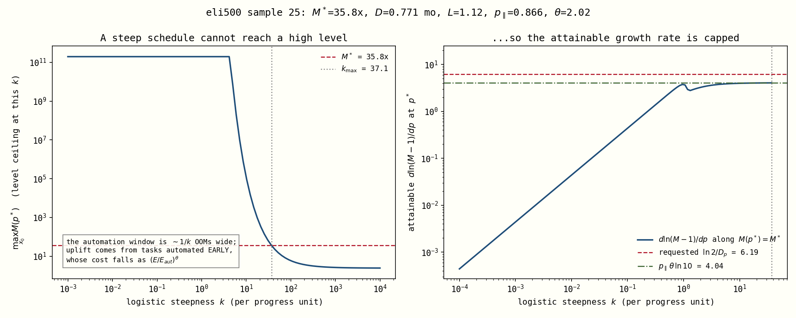
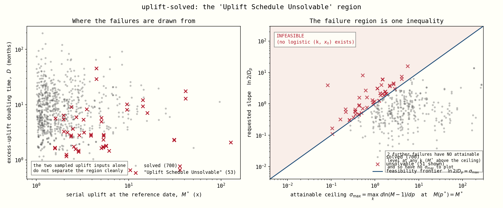

Why some rollouts die with "Uplift Schedule Unsolvable"
A plain-English companion to uplift_unsolvable_region.md.
Same findings, no equations required.
What the model is being asked to do
In uplift-solved mode we don't tell the model when AI hits full coding automation.
Instead we tell it two things we think we know about today:
- The level — "AI currently makes our coding researchers about 5× more productive." (call it M*)
- The speed — "and that boost is doubling every 3 months." (call it D)
The model then has to draw one S-curve — the schedule of how much of coding work gets automated as compute grows — that passes through both of those hoops at once.
In 53 out of 754 rollouts (about 7%), it couldn't. Not because the solver gave up, but because no such S-curve exists. Those runs are thrown away, and the run reports "Uplift Schedule Unsolvable".
The one-sentence answer
You can ask for a big productivity boost, or you can ask for a fast-growing one, but past a certain point you cannot have both — and where that point sits is set by two parameters nobody was looking at.
Why not? The intuition
Here's the thing that makes this non-obvious: most of today's AI productivity boost doesn't come from the tasks AI just learned to do. It comes from the tasks AI learned to do a while ago.
A task AI could already handle several doublings of compute ago is now dirt cheap to run — you can throw enormous amounts of it at the problem. A task AI just barely learned to do is still expensive. So the size of today's boost depends on how long ago automation started, i.e. how stretched out the S-curve is.
That creates a trap:
| To get... | You need... | But that means... |
|---|---|---|
| A big boost today (high M*) | a long history of cheap automation → a stretched, gentle S-curve | a gentle curve is, by definition, growing slowly |
| Fast doubling (small D) | a steep S-curve — lots of new automation right now | a steep curve has no history → today's boost is small |
Stretch the curve to get the level, and you lose the speed. Steepen it to get the speed, and you lose the level. The two requests fight each other.

Left: as the S-curve gets steeper (moving right), the biggest boost it can possibly produce collapses — from 100 billion× down to about 6×. Right: the fastest growth it can produce, given that it still has to hit the requested boost, flattens out at a ceiling. The red dashed line is what this particular draw asked for. It's above the ceiling, so there is nothing to find.
The speed limit
When you push the S-curve as steep as it will go while still delivering the requested boost, everything automatable is already automated. At that point the only thing still making AI researchers more productive is that compute keeps getting more efficient. That's the hard ceiling, and it's beautifully simple:
Maximum growth rate =
parallel_penalty×compute-efficiency slope× 2.303
Two parameters. Not the automation asymptote, not the CES elasticity, not what progress level you're at — those turn out to be irrelevant (their distributions in the failed runs and the successful runs are literally identical).
Turned into something you can check by hand:
Fastest possible doubling ≈ 3.6 ÷ (
parallel_penalty×efficiency slope×progress rate) months(times a small correction that only matters when the boost is close to 1×)
Ask for anything faster and the rollout dies. Every single time. This one inequality sorts all 754 rollouts perfectly:

Left: the two things we actually sample — boost size and doubling time. The failures (red) are scattered through the middle with no clean edge; you can't see the rule from here. Right: the same runs, replotted against the speed limit. Everything above the line fails, everything below it succeeds — with no overlap at all. The closest survivor sits at 95% of its limit; the closest failure at 102%.
The exact version
The speed limit above isn't a fit or an approximation — once every task is automatable, the model's uplift has a genuine closed form. The CES collapses to a two-term expression whose only moving part is the AI's compute term, and everything falls out of that.
Elasticity of the uplift to effective compute
Elasticity of the excess uplift — the quantity the doubling time refers to
where the distance-from-the-ceiling factor is
and the ceiling itself is
Multiply by to get "per OOM of effective compute" instead of "per log compute" — that's where the 2.303 in the speed limit came from.
What all the letters mean
| symbol | in the code | what it is |
|---|---|---|
| — | the uplift. How many times more coding labour the team effectively has, versus humans alone. means AI is contributing nothing. | |
| — | the excess. The part of the uplift that "doubles every D months" refers to. Doubling from 0.2 to 0.4 takes from 1.2× to 1.4×. | |
| — | effective compute. Progress is just , so one progress unit = one OOM of effective compute. | |
parallel_penalty |
the parallelism haircut. A big pile of AI labour run in parallel is worth less than the same labour run serially; the model raises labour to this power. Typically 0.1–0.9. | |
coding_automation_efficiency_slope |
the compute-efficiency slope. How fast AI's output per unit of compute improves as effective compute grows. Measured here in OOMs per progress unit (the sampled value is per progress-year, so divide by the anchor rate). | |
rho_coding_labor |
the CES substitution parameter. Negative means AI and humans are complements — you can't fix a missing human step by throwing more AI at it. Typically −1 to −5. | |
≈ max_serial_coding_labor_multiplier |
the hard ceiling on the uplift. No schedule and no amount of compute gets above this. | |
tail_eps (derived) |
the un-automatable sliver. The fraction of tasks at the very top of the difficulty grid that the frontier never automates. It's what creates the ceiling. | |
| — | the throttle. See below. Between 0 and 1. |
So what is ?
is the fraction of each compute-efficiency gain that actually turns into uplift growth. Formally it's the AI term's share of the CES labour aggregate, where is the ratio of the AI-compute term to the leftover human-bottleneck term. Informally:
- — AI is the binding input. There's still plenty of headroom below the ceiling, so every bit of extra compute efficiency shows up one-for-one in the uplift. Growth runs at its full rate .
- — the un-automatable sliver is the binding input. You've squeezed out everything automation can give. Extra compute now does essentially nothing, because the work that's left isn't compute-limited. Growth stalls at the ceiling.
So is a diminishing-returns dial that starts wide open and closes as climbs toward — which is exactly what the middle expression says: .
And notice what is not anywhere in these formulas: the automation asymptote, the shape of the S-curve, where you are in progress. Given the parameters, the growth rate depends on the current uplift and nothing else.
One more thing worth staring at: turns out to be exactly the
max_serial_coding_labor_multiplier parameter (whenever the tail isn't clipped by its
own bounds). The ceiling wasn't an emergent mystery — it was an input all along.
Excess vs raw: they behave quite differently
The doubling time in the elicitation is about the excess, , so that second formula is the one that governs feasibility. It is not a cosmetic rewrite of the first:
- The raw uplift has a plateau; the excess doesn't. climbs to exactly and sits there for many OOMs. The excess is always above that, by the factor , and only settles onto it from above once .
- The excess elasticity only ever falls. Along any trajectory both of its moving parts shrink — as the uplift grows, and as it nears the ceiling — so the product is strictly decreasing. The excess-uplift doubling time can only get longer, and its fastest value is at the moment full automatability is reached. That's precisely why the feasibility ceiling gets evaluated there.
- It blows up as . At a 1.01× uplift the excess grows 101× faster than the uplift itself. That is the whole reason small-boost draws never fail: they have about four orders of magnitude of slope headroom.
Worked through for eli500#27 ( per OOM):
| uplift | excess doubles every | |||
|---|---|---|---|---|
| 2.1× | 0.214 | 0.402 | 1.000 | 0.75 OOMs |
| 28.8× | 0.258 | 0.267 | 1.000 | 1.13 OOMs |
| 4.1e6× | 0.258 | 0.258 | 1.000 | 1.17 OOMs |
| 6.9e7× | 0.120 | 0.120 | 0.467 | 2.50 OOMs |
| 7.7e7× (= cap) | 0 | 0 | 0 | never |
Three regimes
| where you are | what happens |
|---|---|
| Far below the ceiling (s ≈ 1) | Growth is exactly p∥ × θ per log-compute. This is the speed limit. |
| Approaching the ceiling | The gap closes as a power law, Mcap − M ∝ Eρθ, and growth decays to zero. You have about log₁₀(Mcap/M) ÷ (p∥·θ) OOMs of runway before this bites. |
| Uplift near 1× | The M/(M−1) factor blows up: the excess can double arbitrarily fast even while the boost itself barely moves. This is why small-boost draws had ~4 orders of magnitude of headroom and never failed. |
It checks out
Against the actual model code, across seven orders of magnitude of M/Mcap:
| draw | M | M/Mcap | model | closed form | rel. error |
|---|---|---|---|---|---|
| eli500 #27 | 171 | 2e−6 | 0.596449 | 0.5964606 | 2e−5 |
| eli500 #27 | 4.07e6 | 0.053 | 0.5929658 | 0.5929658 | 8e−13 |
| eli500 #3 | 9 740 | 0.011 | 1.077784 | 1.077784 | 2e−10 |
| eli500 #3 | 889 426 | 0.997 | 0.005953199 | 0.005953195 | 6e−7 |
| eli500 #480 | 2.4185 | 0.9991 | 0.003480029 | 0.003480026 | 9e−7 |
And the ceiling formula reproduces the level ceiling I originally had to find by brute force to machine precision — max relative error 4×10⁻¹⁵ across 80 draws.
Which means the two failure modes are one formula
Everything in this document is now the same inequality read two ways:
- 51 runs asked for growth above
p∥ · θ · ln10 · M/(M−1)— the s ≈ 1 ceiling. - 2 runs asked for a boost above Mcap — the ceiling itself.
Is it a bug?
No. This was the main thing to rule out, and it's ruled out three ways:
- We mapped the error surface on a dense grid across every possible S-curve shape for the failing cases. There's no solution hiding anywhere — for one case, every shape that gets the level right has the speed stuck 78% too low.
- We re-ran the boundary calculation at 10× finer resolution on the 18 closest calls. Nothing moved (< 0.005%) and nothing flipped.
- We varied the numerical step size by 100×. Identical answers.
So: 51 of the 53 are genuine "no such curve exists". Zero are the solver fumbling a solvable problem.
The other 2
Two failures (the same random draw appearing in both runs — same seed) are a different
and much dumber problem: that draw asks for a 41× productivity boost while a
separate parameter in the same draw, max_serial_coding_labor_multiplier, caps the
boost at 1.37×. Two parameters describing the same quantity, sampled independently,
30× apart. Worth fixing at the sampling layer.
Why this matters beyond the error message
The 7% we lose is not a random 7%.
The runs that die are the ones with a big AI boost, growing fast, in worlds where compute efficiency improves slowly. That is precisely the fast-takeoff tail. Silently deleting it tilts the whole forecast toward slower takeoff.
So this isn't just noise in the pipeline — it's a systematic thumb on the scale, and it should be handled deliberately rather than by rollouts quietly failing.
What to do about it
- Stop sampling the doubling time independently. How fast the boost can double is
physically tied to
parallel_penaltyand the compute-efficiency slope. Sample "how close to the physical floor" instead of an absolute number of months, or correlate them ininput_distributions.yaml. - Reject at sample time, with the formula above. Then the hole in the posterior is explicit and countable instead of being 7% of rollouts that vanish.
- Make
max_serial_coding_labor_multiplierconsistent with the requested boost. - Make the error message say why. Right now the failure carries no diagnostics — the code computes the reachable range, logs it, and the batch workers throw the log away. Attaching it to the exception (the way the three-condition path already does) would have turned this whole investigation into a one-line search.
Technical version, with the derivation, the exact numbers, and the reproduction
recipe: uplift_unsolvable_region.md.